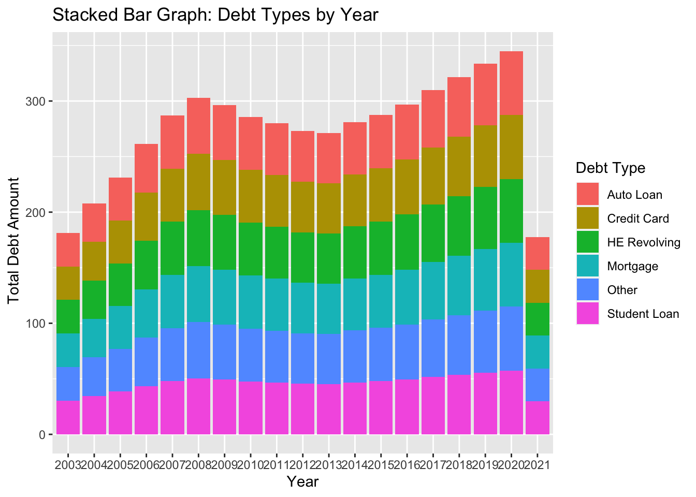
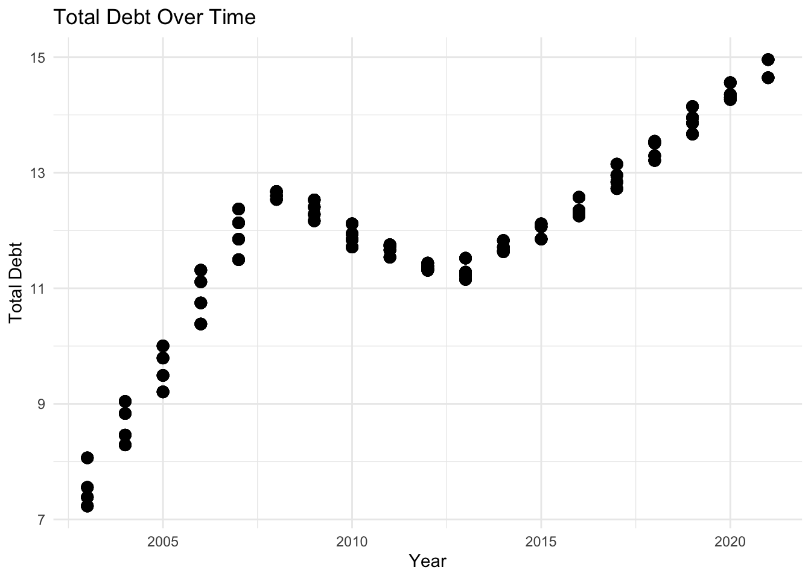

library(tidyverse)
library(ggplot2)
library(lubridate)
library(dplyr)
library(summarytools)
library(readxl)
knitr::opts_chunk$set(echo = TRUE, warning=FALSE, message=FALSE)Challenge 6: Visualizing Debt Over Time
challenge_6
Dirichi Umunna
debt
Visualizing Time and Relationships
Introduction
The dataset I am currently working with spans from the first quarter of 2003 to the second quarter of 2021. It provides quarterly measurements of household debt associated with various loan types. Specifically, it includes information on mortgage debt, HE revolving debt, auto loans, credit card debt, student loans, and other types of loans. Additionally, there is a variable representing the total household debt, which encompasses all six loan types.
Read in Data
newdebt <- read_excel("_data/debt_in_trillions.xlsx")
##condensed summary of the data
print(summarytools::dfSummary(newdebt,
varnumbers = FALSE,
plain.ascii = FALSE,
style = "grid",
graph.magnif = 0.70,
valid.col = FALSE),
method = 'render',
table.classes = 'table-condensed')Data Frame Summary
newdebt
Dimensions: 74 x 8Duplicates: 0
| Variable | Stats / Values | Freqs (% of Valid) | Graph | Missing | |||||||||||||||||||||||||||||||||||||||||||||||||||||||
|---|---|---|---|---|---|---|---|---|---|---|---|---|---|---|---|---|---|---|---|---|---|---|---|---|---|---|---|---|---|---|---|---|---|---|---|---|---|---|---|---|---|---|---|---|---|---|---|---|---|---|---|---|---|---|---|---|---|---|---|
| Year and Quarter [character] |
|
|
 |
0 (0.0%) | |||||||||||||||||||||||||||||||||||||||||||||||||||||||
| Mortgage [numeric] |
|
74 distinct values |  |
0 (0.0%) | |||||||||||||||||||||||||||||||||||||||||||||||||||||||
| HE Revolving [numeric] |
|
73 distinct values |  |
0 (0.0%) | |||||||||||||||||||||||||||||||||||||||||||||||||||||||
| Auto Loan [numeric] |
|
71 distinct values |  |
0 (0.0%) | |||||||||||||||||||||||||||||||||||||||||||||||||||||||
| Credit Card [numeric] |
|
69 distinct values |  |
0 (0.0%) | |||||||||||||||||||||||||||||||||||||||||||||||||||||||
| Student Loan [numeric] |
|
73 distinct values |  |
0 (0.0%) | |||||||||||||||||||||||||||||||||||||||||||||||||||||||
| Other [numeric] |
|
70 distinct values |  |
0 (0.0%) | |||||||||||||||||||||||||||||||||||||||||||||||||||||||
| Total [numeric] |
|
74 distinct values |  |
0 (0.0%) |
Generated by summarytools 1.0.1 (R version 4.2.2)
2023-05-11
We observed that the date and quarter information is combined in a single column. To address this, we will utilize the mutate function to split them into separate columns. Additionally, we will leverage the lubridate package to convert the year into a date format, which will enhance our analysis.
#separate date and quarter
newdebt <- newdebt %>%
separate(`Year and Quarter`, into = c("Year", "Quarter"), sep = ":Q") %>%
mutate(Year = paste0("20", Year))Bivariate Analysis
#pivot longer to clarify debt type
longerdata <- newdebt %>%
pivot_longer(cols = -c(Year, Total, Quarter), names_to = "Loan Type", values_to = "Debt")
##next, try to stack the data
ggplot(longerdata, aes(x = Year, y = `Total`, fill = `Loan Type`)) +
geom_bar(stat = "identity") +
labs(x = "Year", y = " Total Debt Amount", fill = "Debt Type") +
ggtitle("Stacked Bar Graph: Debt Types by Year") +
scale_x_discrete(breaks = unique(longerdata$Year))
Here, I attempted to use the pivot_longer function to reshape the data before creating a stacked bar graph. The purpose of using a stacked bar graph in this instance is to visually depict the composition of different debt types by their respective debt amounts. I also don’t know what went wrong in the year column.
Time
Now, we utilize a scatter plot to examine the total debt over time. A scatter plot is an effective choice in this scenario as it allows us to visualize the relationship between two continuous variables: time (year) and total debt.
ggplot(data = longerdata, aes(x = as.numeric(Year), y = Total)) +
geom_point(size = 3) +
labs(x = "Year", y = "Total Debt") +
ggtitle("Total Debt Over Time") +
scale_x_continuous(breaks = seq(2000, 2025, by = 5)) +
theme_minimal()